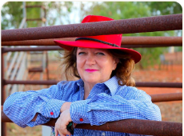

Presidenta Ejecutiva
Gina Rinehart AO
Lidera la visión estratégica y el compromiso filantrópico del grupo Hancock Prospecting, impulsando donaciones récord para la salud, la educación y el deporte australiano.